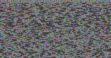

YTNotify is a YouTube channel update checker I made when a browser plugin I had been using for similar functionality stopped working. It works by periodically requesting special "channel uploads" playlists from YouTube's API and checking for any videos that are newer than what was previously recorded. It shows up as a tray icon and updates the user on new videos through the OS's notification system.
